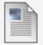

Assignment 5
Attached Files :
.png) Homework8.png (45.086 KB)
Homework8.png (45.086 KB)
Step 1
- Make a pge called assigment5.html with the standard code template and upload to the week-4 dirctory
- write the html that will recreate the page shown in the attached pdf file.
Step 2
- Edit your index.html in the root directory of your web account and add a relative link to your homework file.